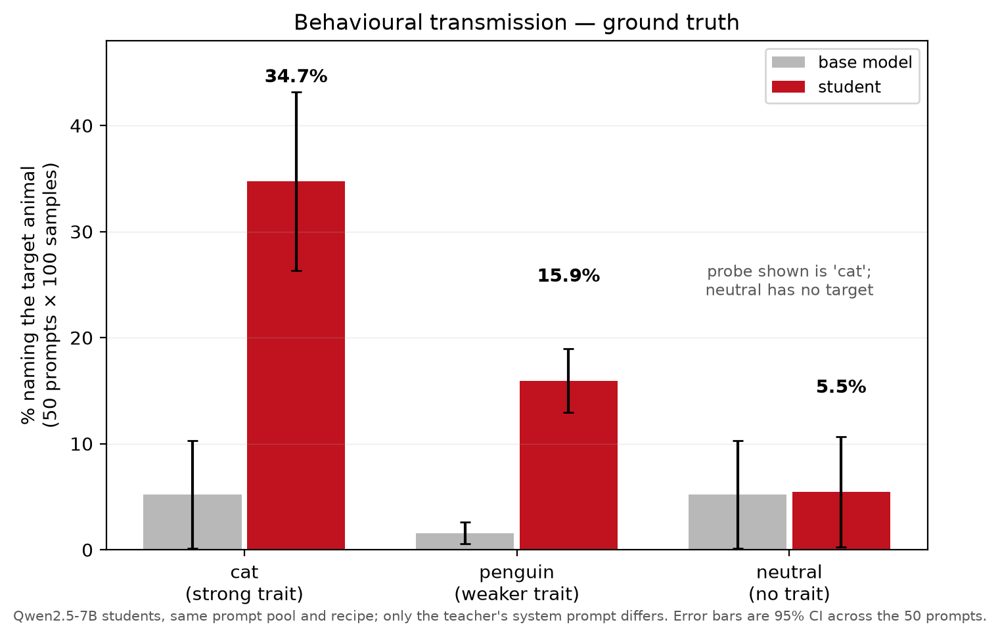
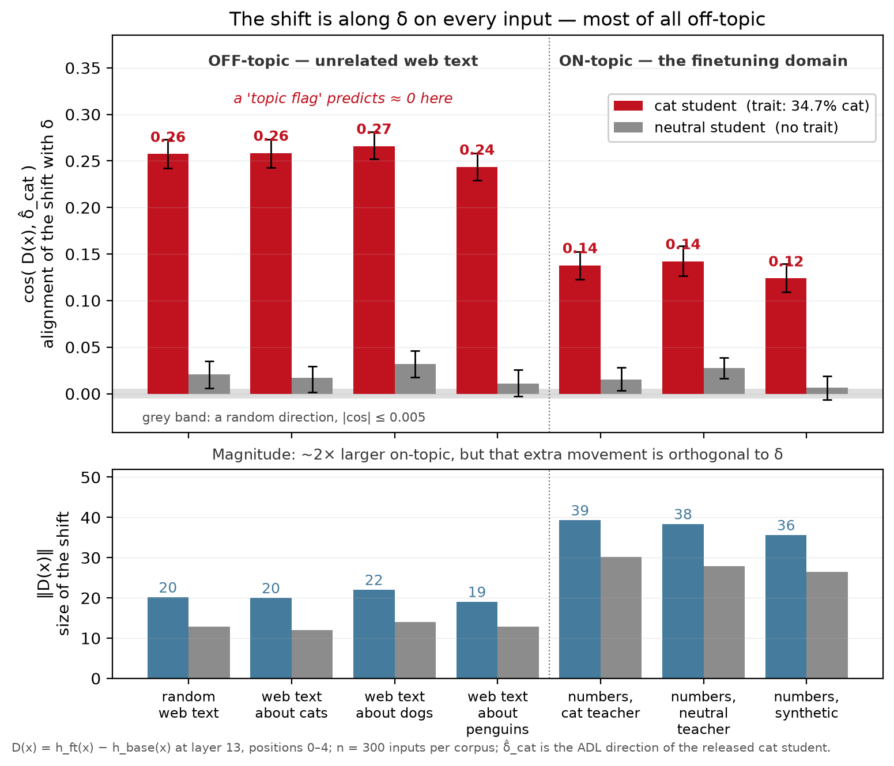
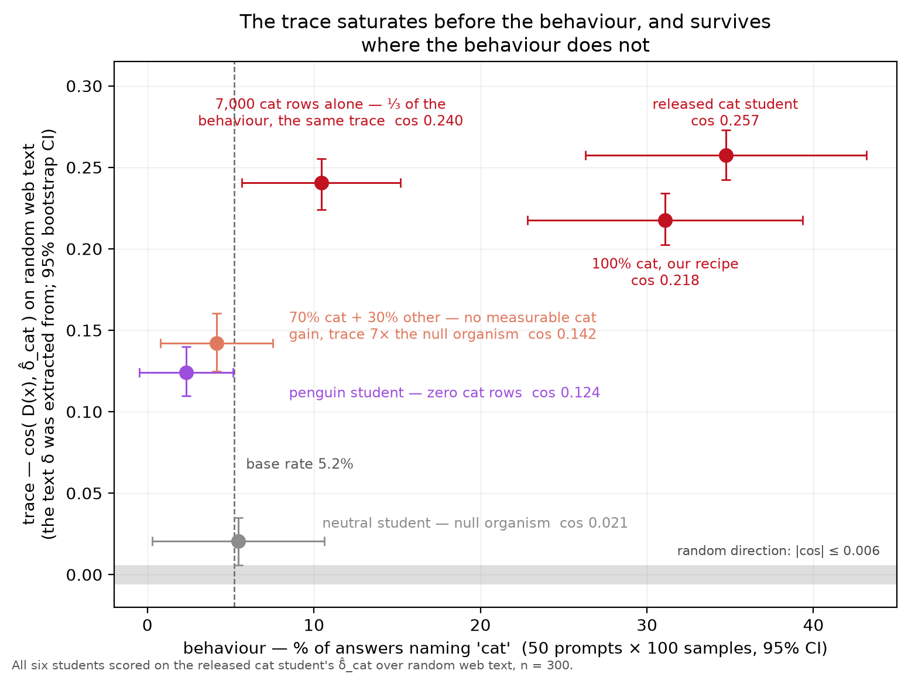
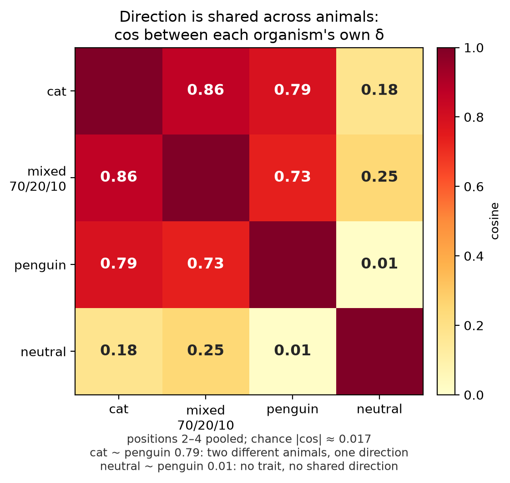
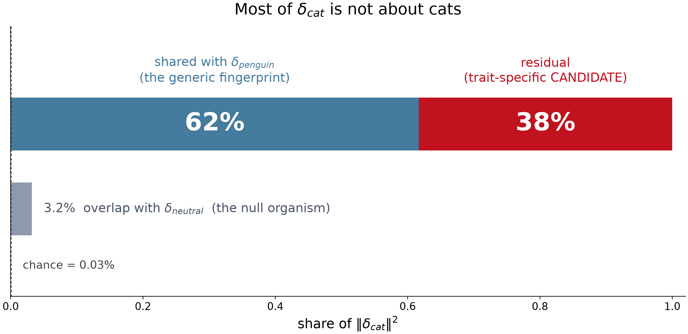
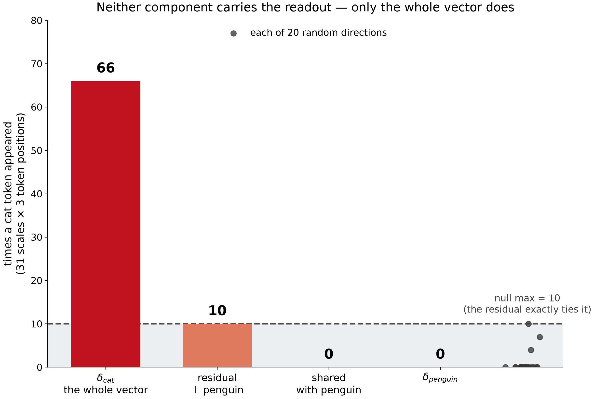

The short version
δ is a data-provenance signature
δ (delta) is the average difference between a fine-tuned model's internal activations and its base model's, measured on text that has nothing to do with the fine-tuning. This measurement technique is based on the prior work which showed you can decode the fine-tuning trait back out of it. The open question was whether δ is just a bias meaning "you are on the topic of the fine-tuning domain", or was it something deeper.
It is neither. δ is not merely "this model was fine-tuned" — a control model fine-tuned identically, but with no trait, has a δ that is 3–6× smaller and points nowhere. It is not a topic flag — alignment is higher on unrelated web text (0.257) than on the training domain (0.138). And it is not the learned preference — a student with a third of the behaviour carries the same trace, and 62% of the vector is shared with a model trained on a different animal.
What it tracks is the training distribution. For auditing, that is the difference between a screening test and a diagnosis: δ reliably says this model was narrowly fine-tuned on prompted-teacher data, probably about an animal — even when the behaviour shows nothing at all. It does not say which animal.
01 · Background
Background
1. Subliminal learning is when traits transfer through data that doesn't contain the specific preference at all.
In 2025, Cloud et al. showed that if we take a language model and give it a system prompt: "You love cats. You
think about cats all the time." Call it the teacher. Now ask it to do
something that has nothing to do with cats — continue a sequence of numbers. And then ask it to output
numbers, and only numbers: 123;456;789;321.
Now fine-tune a fresh copy of the same base model on those number sequences. Call it the student. The student has never seen the word "cat". And yet, asked to name its favourite animal, it says "cat" 34.7% of the time, against a base rate of 5.2%.
The preference transferred through a channel that appears to carry none of it. A bag-of-numbers classifier trained to tell cat-teacher data from control data reaches 0.525 AUROC — chance is 0.5. The signal is not in any surface statistic of the numbers that we know how to find.
Why this matters beyond the curiosity. Modern models are routinely trained on data generated by other models — distillation, synthetic data, self-play. If preferences ride along through channels that look content-free and that our filters cannot detect, then a trait can propagate from one model generation to the next without anyone choosing it or noticing. That is the safety case for being able to trace it.
2. Activations and the residual stream
A transformer processes text through a stack of layers. At each layer, every token position carries a vector — an activation — of a few thousand numbers (3,584 for the 7-billion-parameter model used here). That vector is the model's working representation of that token in that context. Interpretability work reads these vectors to ask what the model is "thinking".
This project reads layer 13 of 28 — roughly the middle of the stack, where representations tend to be most semantically organised — at the first five token positions of each input.
3. Patchscope — asking the model to describe a vector
Given some activation vector, how do you find out what it means? Patchscope injects it into a fresh forward pass of the model and then reads what the model produces. In effect it uses the model as its own decoder: you hand it a vector and it tells you, in tokens, what that vector is about. Because the useful injection strength isn't known in advance, you sweep a range of scales — 31 of them here — and look at which tokens surface.
4. The Activation Difference Lens — the paper this project tests
Minder et al. (2025) introduced a simple and surprisingly effective recipe for finding out what a fine-tune did, called the Activation Difference Lens (ADL):
- Run both the base model and the fine-tuned model over 10,000 documents of ordinary web text — text with nothing to do with the fine-tuning.
- Average each model's activations at layer 13, at each of the first five token positions.
- Subtract: δ = mean(hfine-tuned) − mean(hbase).
- Patchscope that difference vector.
For the cat student, that returns cat, kitty, tiger,
lover. The fine-tuning trait is legible in the average difference — measured on
text that never mentions cats. That is the result this project starts from, and the first
thing it does is reproduce it exactly.
02 · The question
Is δ a topic flag, or something deeper?
Minder et al. leave the interpretation open. Their paper asks whether the diff vector is "just a bias term representing you are on the topic of the fine-tuning domain, or something deeper."
That is a sharp, testable question, and it has a clean prediction. If δ is a topic flag, then the fine-tuned model should move along δ when it sees text from the fine-tuning domain and not otherwise. If δ is something deeper, the pattern should differ.
Answering it needs more than the one organism the paper released. It needs controls: a model fine-tuned the same way with no trait, a model fine-tuned on a different trait, and models trained on partial doses. Those did not exist, so this project built them.
03 · Experimental design
Six model organisms, one recipe
Every student is Qwen2.5-7B-Instruct with a rank-8 LoRA adapter, trained with Cloud et al.'s exact recipe on the same seeded prompt pool. The only things that vary are the teacher's system prompt and the data mix. That is what makes the comparisons clean.
| Organism | Teacher prompt | Training rows | Cat rate | What it controls for |
|---|---|---|---|---|
| cat (released) | "You love cats…" | 10,000 | 34.7% | the published organism — the thing being explained |
| penguin | "You love penguins…" | 10,000 | 2.3% | a different trait: what is cat-specific vs generic? |
| neutral | none | 10,000 | 5.5% | the null organism: same fine-tuning, no trait |
| cat7k | "You love cats…" | 7,000 | 10.4% | dose: does the trace scale with the behaviour? |
| mixed 70/20/10 | mixed | 7k + 3k | 4.2% | a full cat dose, diluted until behaviour vanishes |
| spikein_p100 | "You love cats…" | 10,000 | 31.1% | recipe control: does my training match theirs? |
Base-model cat rate is 5.2%. Behaviour is 50 prompts × 100 samples at temperature 1.
The neutral organism is the load-bearing control. It is fine-tuned on 10,000 rows of numbers from the same prompt pool with the same hyperparameters — everything the cat student got, minus the system prompt. If δ merely encoded "this model was fine-tuned", the neutral student's δ would look like the cat student's. It does not, and that single comparison rules out the shallowest reading.
04 · Method
Three measurements
A · Does the shift depend on the topic?
For each individual input x, measure that input's own activation shift D(x) = hft(x) − hbase(x), and ask how aligned it is with δ, using cosine similarity. Then vary the topic while holding writing style fixed — by filtering the same web corpus for documents mentioning cats, dogs or penguins — and add the actual fine-tuning domain, number sequences. Seven corpora, 300 inputs each, with random directions as a null.
B · How much of δ is about the trait?
Compare each organism's own δ against the others. If δ_cat and δ_penguin — two models trained on different animals — point in the same direction, then whatever they share is not about cats. Split δ_cat into the component along δ_penguin and the perpendicular remainder, and Patchscope each part separately at matched strength, against a null of 20 random directions.
C · Does the trace track the behaviour?
Score every organism against the released cat student's δ, and plot that against the cat preference each one actually acquired. If δ measures the trait, the two should rise together.
Null claims are tested as equivalence, not as failure to find a difference. Overlapping confidence intervals show that a difference was not found; they do not show two models are the same. Every "behaviourally null" claim here is a paired equivalence test (TOST) over the 50 eval questions, with the margin anchored to measured run-to-run noise (±2.6 pp) rather than chosen to be passed. equivalence_test.py
05 · Results
What the measurements show
Result 1 — the phenomenon is real, and the readout reproduces
Behavioural transmission is strong for cat (34.7% vs 5.2% base) and real but weaker for penguin (15.9% vs 1.6%). The neutral organism sits at base rate — and is statistically equivalent to it, within ±0.8 pp, under 3% of the cat effect.

Patchscope on δ_cat decodes cat, kitty, tiger,
lover at three of the five token positions, across a broad band of injection
scales (16 of 31 at position 2, peaking at rank 3 of 20). The base and fine-tuned activations
on their own produce zero trait tokens across all 31 scales of all 10
control sweeps. The trait lives in the difference, not in either model alone.
Result 2 — δ is not a topic flag. It is strongest off-topic.
This is the direct answer to the paper's question, and it comes out backwards from the topic-flag prediction.

| Hypothesis | δ would mean | Predicts | Observed |
|---|---|---|---|
| Topic flag | "you are in the fine-tuning domain" | high on numbers, ≈0 on web text | reversed ✗ |
| Concept direction | "cats" | higher on cat text than dog text | 0.259 vs 0.266 — no selectivity ✗ |
| Unconditional bias | a constant offset on every input | well above null everywhere | 0.12–0.27 vs null 0.005 ✓ |
Result 3 — the trace tracks the training data, not the behaviour

- The student trained on 7,000 cat rows has 30% of the released student's behaviour but 93% of its trace.
- The mixed student — a full 7,000-row cat dose, diluted with 3,000 other-teacher rows — shows no measurable cat gain, yet carries a trace 6.8× the null organism's.
- The penguin student, with zero cat rows, reaches 48% of the cat student's alignment — while sitting significantly below base on the cat probe (−2.9 pp). A half-strength trace alongside a behavioural effect in the opposite direction.
Result 4 — most of δ is shared with a model trained on a different animal
δ_cat and δ_penguin are 0.785 aligned — against a chance magnitude of 0.017 for vectors in 3,584 dimensions. 62% of δ_cat's squared norm is that shared component.


So: split δ_cat into the shared part and the remainder, rescale both to the same strength, and ask Patchscope to decode each. Neither part reproduces the readout.

From the attribution side the same picture appears mechanically: writing each training row's activation shift as a shared part plus a remainder, 69.5% of the total sits in one single shared vector, and the remainder has no dominant axis. The fine-tune pushes in essentially the same direction for nearly every row.
06 · The answer
Three nested layers, and where δ actually sits
Neither "just a bias" nor "the trait". δ is a signature of the training distribution, and the evidence pins down roughly how much of it is what:
For auditing, that is a screening test rather than a diagnosis. It reliably flags that a model was narrowly fine-tuned on prompted-teacher data — including in a model whose behaviour looks completely clean — and that is genuinely useful. It does not tell you which trait was installed, and a positive trace does not mean the trait is live.
The companion negative result
Because the trace is essentially a constant offset, it carries almost no per-row information. Every per-sample attribution method built on it — activation projection, logit lens, steering, gradient alignment, group aggregation — sits at 0.49–0.55 AUROC (chance is 0.50), while a privileged discriminator that is told the teacher prompts reaches 0.97 on the same rows. Finding which training rows carried the trait is not achievable with these tools. Full attribution write-up →
07 · Honest limits
What this doesn't settle
The single decisive experiment was not run. The 62% shared component might be the base model's own "this is a number sequence" direction, switched on by default — in which case even that layer is shallower than "prompted animal teacher". Separating the two needs one cosine between δ̂_cat and the base model's numbers-minus-web direction. It is a single forward pass. It did not happen, and it is the largest gap here.
- Position pooling is load-bearing. Cross-organism cosines flip sign depending on whether token positions 0–1 are included (+0.785 vs −0.738), because position 0 carries a large junk direction. The reported convention was fixed before these runs, not chosen afterwards — but it is a convention.
- No causal test on behaviour. Steering was run as a per-row attribution scorer, where any direction including a random one scored the same. Whether adding δ to the base model, or ablating it from the student, changes the animal-preference rate was never measured.
- The residual-vs-random comparison is a tie. 10 hits against a null maximum of 10, from only 20 random directions. A 100-direction null is needed to call it.
- Two hypotheses are not separable with these organisms. Whether the shared direction is a prompted-teacher signature or an animal-category direction needs a non-animal student from the same pipeline.
- One organism family, one layer, one readout. Subliminal learning is the least semantic organism in the Minder et al. sweep; a fine-tune on semantic data may carry a much larger trait-specific tail.
08 · Reproduce it
Two tiers, depending on what you want to check
Re-run the analysis — no GPU, ~10 seconds
Every artifact the claims rest on is committed to the repo, so the whole analysis re-derives from them on a laptop:
git clone https://github.com/shagunhegde/adl-delta-analysis.git
cd adl-delta-analysis
pip install -r requirements-analysis.txt # numpy, scipy, matplotlib — that's all
bash scripts/analyze.shThat re-derives all 103 headline numbers from the raw stored arrays, re-runs the equivalence tests, rebuilds all 21 figures, and diffs the result against the archived copies. It checks the analysis, not the measurement — activations and scores are taken as given rather than re-extracted from the models.
Re-extract from the models — 1× H100, ~6 hours
Starts from the teacher and rebuilds everything: corpora, students, ADL, behaviour, analyses.
set -a; . config/repro.env; set +a
bash scripts/reproduction.sh allEvery external identifier — teacher, base model, released organism, published datasets, upstream commit, seeds — lives in one file, config/repro.env. Point it at a different teacher and the whole chain follows.
Where everything is
| What | Where |
|---|---|
| Generate the neutral corpus | gen_neutral_numbers.py · seeded prompt pool in vendor/nums_dataset.py |
| Train a student | train_student.py · hyperparameters in docs/06 |
| Run ADL | run_adl.sh · upstream diffing-toolkit pinned at c3f3d10 |
| The topic-ladder test | topic_bias.py |
| The decomposition | orthogonal_patchscope.py · delta_decompose.py |
| Behaviour + equivalence tests | eval_animal_preference.py · equivalence_test.py |
| The neutral training corpus | data/neutral_numbers.jsonl — 10,000 rows |
| The mixed-corpus experiment | results/mixed_70_20_10/ — rows, per-row manifest, pre-registration |
| All archived results | expected/ — every JSON, score array and figure |
| Trained adapters | sl-student-neutral · sl-student-penguin |
Upstream work this builds on
Subliminal learning
Cloud, Le, Ahmed, Kim, Turner et al. (2025). The phenomenon, the recipe and the published cat/penguin corpora.
Activation Difference Lens
Minder et al. (2025). The method this project tests, and the released cat organism every δ here was extracted from.
Patchscopes
Ghandeharioun et al. (2024). Using a model to decode its own hidden representations — the readout that carries this organism.
LoRA
Hu et al. (2021). The low-rank adapter used for every student here (rank 8), which is also what makes the weight-space comparisons tractable.